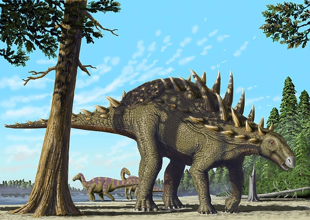

Тиреофоры
Тиреофоры (лат. Thyreophora, буквально — носители щита, от греч. — большой продолговатый щит и греч. — нести) — один из двух подотрядов птицетазовых динозавров, характерной особенностью представителей которого является наличие костных пластин, выстроенных продольными рядами вдоль тела.
Являлись важными компонентами многих наземных фаун начиная с раннего юрского и до конца мелового периодов, распространившись по всему земному шару. Находки ранних тиреофор дают возможность предполагать о питании растительностью, в то же время есть некоторые свидетельства, говорящие о наличии всеядным форм. Вероятно использовали как двуногий, так и четвероногий способ передвижения. Более продвинутые формы характеризуются строгой растительноядностью и квадропедальностью. На протяжении всей своей истории становились более медлительными, развив множество костных пластин и шипов, а также хвостовое оружие в виде «булав» и тагомайзеров.
Большинство известных представителей подотряда принадлежали к одной из двух основных линий — анкилозаврам и стегозаврам. Многие аспекты их ранней эволюционной истории остаются спорными и малоизвестными.
Классификация тиреофоров
- Стегозавры
- Стегозавриды
- Сцелидозавриды
- Анкилозавры
- Анкилозавриды
- Нодозавриды